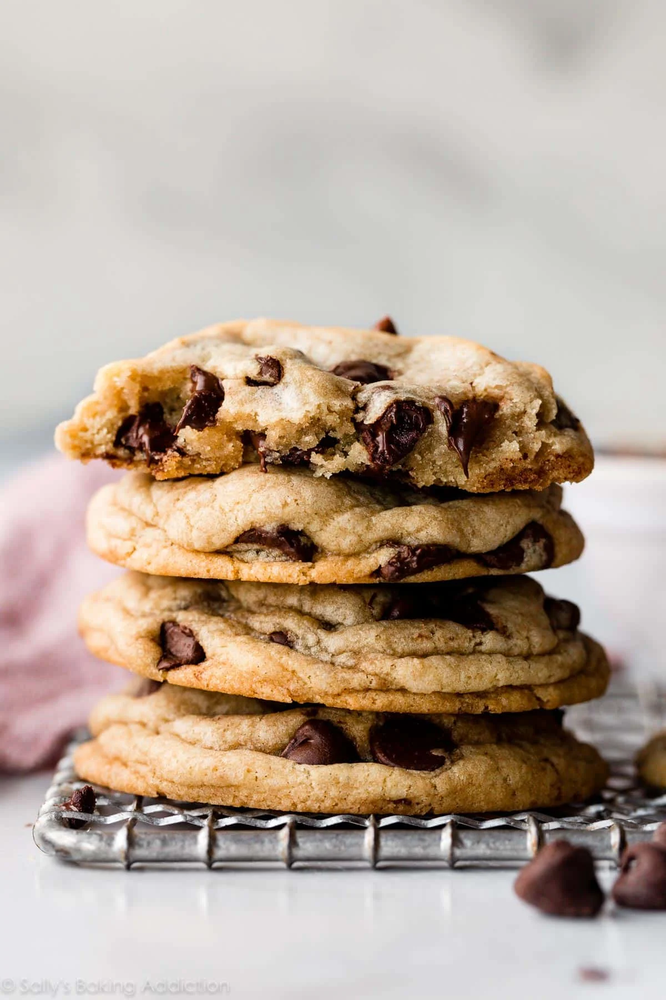

My Favorite Chocolate Chip Cookies
These classic chocolate chip cookies are soft, chewy, and
loaded with chocolate chips. Perfect for any occasion, they are easy to
make and loved by everyone!

/>
Recipe Information
Prep time: 15 minutes
Cook time: 12 minutes
Servings: 24 cookies
Difficulty: Beginner
Ingredients
- 2 cups all-purpose flour
- 1 cup butter, softened
- 3/4 cup brown sugar
- 3/4 cup white sugar
- 2 large eggs
- 2 cups chocolate chips
- 1 tsp baking soda
- 1/2 tsp salt
- 1 tsp vanilla extract
Instructions
- Preheat your oven to 375°F (190°C).
- In a bowl, mix flour, baking soda, and salt together.
-
Cream the butter, brown sugar, and white sugar until light and fluffy.
- Beat in the eggs and vanilla extract until well combined.
-
Gradually add the dry ingredients to the wet ingredients, mixing until
just combined.
- Stir in the chocolate chips.
-
Drop spoonfuls of dough onto a baking sheet, spacing them about 2
inches apart.
-
Bake for 12 minutes or until the edges are golden brown.
-
Let cookies cool on the baking sheet for 2 minutes, then transfer to a
wire rack.
Tips
- For extra chewy cookies, slightly underbake them.
- You can add chopped nuts for more flavor.
- Store cookies in an airtight container to keep them fresh.